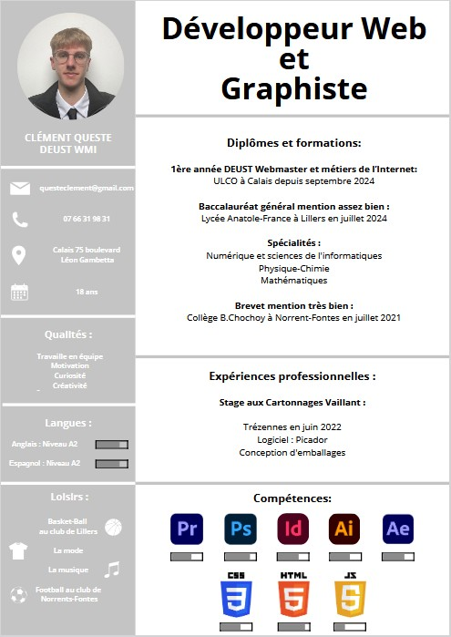

Mon CV :
Coordonnées:
Mon mail est questeclement@gmail.com
Mon numéro de téléphone portable est 0766319831
J'habite à Calais 75 Boulevard Léon Gambetta dans le 62
J'ai eu 18 ans le 16 novembre 2025
Diplômes et Formation:
J'ai obtenue mon Brevet des collèges Mention très bien en Juillet 2021 à Bernard Chochoy Norrent-Fontes.
J'ai obtenue mon Baccalauréat Général Mention Assez Bien en Juillet 2024 à Anatole France Lillers.
Je suis en cours d'optention du dîplome Deust WMI depuis septembre 2024 à l'ULCO de Calais.
Expériences Professionnelles:
J'ai fait un stage aux Cartonnages Vaillant en juin 2022 à Trezennes.
Compétences:
Premier Pro
Photoshop
Indesign
Illustrator
After Effects
Html
css
JavaScript
Langues:
Anglais j'ai le niveau B2
Espagnol j'ai le niveau B2
Qualités:
Je sais Travailler en équipe
Je suis quelqu'un de très motivé
Je suis quelqu'un de très curieux
J'ai beaucoup de Créativité
Loisirs:
J'ai pratiqué le Basket-Ball pendant une année au club de Lillers.
J'adore les vêtements et la couture
La Music me passione de son écoute à la création
J'ai pratiqué le Football pendant 10 années au club de Norrent-Fontes.
